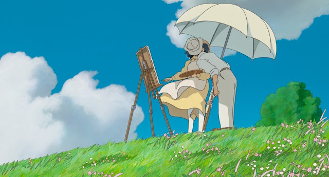

'Ma' (間) e a importância do silêncio no Studio Ghibli.
Eu consigo me lembrar da primeira vez que eu vi um filme do Estúdio Ghibli. Eu tinha uns dez anos e minha mãe havia alugado na locadora mais badalada da cidade "A Viagem de Chihiro". Sinceramente eu não sabia nada sobre aquela animação. Eu nunca havia visto em nenhum trailer, em nenhum cartaz ou Imagem pela internet. Mas quando o filme acabou e tudo que restou foi o silêncio, eu estava completamente maravilhado. Eu nunca havia visto nada parecido. Aqueles cenários cheios de detalhes e aquele traço fino quase que como uma pintura impressionista. Eu não me lembro de ter dado um pio durante todo o filme; estava hipnotizado por aquele universo diferente e aconchegante. Eu sempre fui um amistoso por fantasia. Eu amava história de dragões gigantescos, seres fantásticos lutando e outros místicos produzindo luzes mágicas, mas o que eu estava vendo ali era um tipo diferente de fantasia que eu não sabia simplesmente explicar.
Os anos passaram e felizmente eu pude ter outros contatos com obras do Hayao Miyazaki (um dos criadores e também diretor do estúdio). E mesmo depois de tantos anos, várias vezes regressando pra esses filmes eu ainda não entedia o que me fazia ter aquela mesma sensação inexplicável quando eles acabavam. Por que aquela sensação?
movimento gratuito entrando em cena, tomada um...
Roger Ebert, durante uma entrevista com Miyazaki, elogiou um dos aspectos mais fascinantes da sua capacidade enquanto diretor. Ele disse que adorava o "movimento gratuito" do cineasta. Isto é, como às vezes parece que os filmes dele simplesmente dão uma pausa na trama e nos mostram momentos onde não acontece nada de especial.
É curioso, porque toda vez que eu leio esta fala dele eu me lembro do mesmo trecho de "A Viagem de Chihiro" onde Chihiro e sem rosto fazem uma viagem de trem. Durante todo o percurso nada realmente acontece. A gente os assiste cabisbaixos no vagão enquanto os passageiros vão aos poucos decendo em suas respectivas paradas. Não tem diálogo, não tem ação, apenas os dois observando a paisagem passando borrada pela janela meio embaciada. E isso é tão verdadeiro que quando eu me lembro disso eu me lembro simplesmente dos meus momentos de viagem e é exatamente assim que acontece. Eu fico em silêncio observando a paisagem até talvez cair no sono.
Como resposta pra Ebert, Miyazaki respondeu: "A gente tem uma palavra pra isso em japonês. É chamada de MA (vazio). Isso está ali intencionalmente"
o conteito de 'ma' (間)
Esse conceito é muito antigo na cultura japonesa e parece estar com eles desde sua formação social. Ma é uma das leituras do ideograma 間, representado pelo sol (日) no meio de um portal (門). De uma forma simples e objetiva, Ma pode ser entendido como intervalo de tempo ou espaço entre dois elementos. Isso nos ajuda a entender o contexto de uma maneira melhorada.
Ma não é um vazio qualquer. É um vazio que tem seu propósito. Importa e tem significado. Significado que se expressa na ausência de algo. Uma porta aberta é um espaço vazio, um vão. Mas é a partir deste vazio que podemos observar o sol brilhando radiantemente belo lá fora. Logo, Ma é uma ausência que permite que algo se manifeste através dela.
Os filmes do Studio Ghibli são repletos de ação e movimento, isso não tem como negar, mas a questão é que estas histórias tem um senso de equilíbrio muito grande. Isso significa que nós vamos nos deparar com momentos em que os personagens precisam respirar. Momentos de pura contemplação. Isso me lembra das vezes em que eu ia na casa da minha tia, no campo, e depois de brincar ferozmente com meus primos eu simplesmente sentava de frente à represa e ficava observando a Vitória Régia, ou quando eu vou dar uma volta pelo lago e paro pra observar o poente esmorecido no horizonte, ou mesmo quando eu olho pra cima e percebo os detalhes da copa de uma árvore, a luz entrando por entre os galhos redimida e o vento fazendo as folhas dançarem suavemente.
é importante valorizar as pausas...
Todas às vezes que meus primos e eu nos desentendíamos eu preferia simplesmente caminhar por aí pela estada vendo a plantação de girassóis ou talvez subir em cima de uma árvore de Manga do que fingir que nada disso tinha acontecido. Eu simplesmente ficava observando a vista sumindo lá na frente. Eu conseguia pensar no porquê do desentendimento e depois essa reflexão se misturava com a observação que por sua vez se perdia compenetrada no vazio e então eu me esquecia de tudo e mais tarde nós estávamos juntos novamente.
É importante ter um tempo pra parar. Tempo de respirar. É necessário absorver e o mais importante: prestar atenção nos simples detalhes da vida. Isso parece coisa de vovó, mas pra quem não tem pressa pra viver ver a flores e a grama sendo levada pelo vento é uma dádiva. Sentar por aí e observar o mundo entendendo-se como ser vivente deste lugar.
medo do silêncio...
Ainda na mesma entrevista Miyazaki diz: "As pessoas que fazem filmes têm medo do silêncio. [...] Elas ficam preocupadas que o público vai se entediar. Que eles vão se levantar e ir comprar pipoca. Mas só porque o filme é 80% intenso o tempo todo, isso não significa que as crianças vão te abençoar com a concentração delas. O que realmente importa são as emoções subjacentes - você não deve abandoná-las."
É através destes momentos de vazio que os mundos criados por Miyazaki se manifestam com mais intensidade tal como a luz do sol que passa pelo vão da porta. A intensidade aqui está nas visceralidade da ação, mas também está na delicadeza do tempo. O silêncio pode parecer incomodar e muitas pessoas fogem da reflexão que ele está disposto a nos proporcionar, todavia, o silêncio é agradável e acolhedor. Ele traz alento e nos envolve em seus braços ternos, quase que nos dizendo: você pode pensar agora. E então nos sentimos confortáveis o suficiente pra aproveitar a nossa própria companhia. Estar sozinho não é ser sozinho. O humano precisa destes momentos de intimidade pra se encontrar e refletir seus caminhos. Acontece é que tem muita gente que tem medo disso. Tem medo de ser perder no caminho e se entediar. Mas esse medo não existe nas obras do Miyazaki.
Esta foi a maior das razões pela qual eu me tornei tão fascinado pelo cinema do Estúdio Ghibli. Por muito tempo eu não sabia entender, mas eu estava num sentimento intenso de imersão. Não somente pelos gráficos cheios de aconchego ou pelos elementos fantásticos do filme, mas também porque o Miyazaki permitiu que o mundo criado por ele se construísse na minha frente como um ritmo e com um propósito. Foi possível viver as aventuras de Chihiro, mas eu também contemplei o mundo ao redor. Ela parou e eu parei com ela. Todas às vezes foi a mesma coisa, o castelo animado caminhando lentamente pelas montanhas; o Porco Rosso voando no avião por entre as nuvens entardecidas; O Totoro e a Satsuke esperando um ônibus na chuva.
o observador está observando...
Com sua animação sutil Miyazaki foi capaz de observar através das janelas os movimentos delicados e discretos dos estados humanos. É na sutileza, nos detalhes e na minúcia que ele se diferencia de que existe na animação japonesa. Se você parar pra pensar vai perceber quê os animes comunicam emoções através dos exageros e da exuberância visual.
Hayao parece não gostar da falta de tato que a animação japonesa tomou nos últimos anos. Ele disse: "Quase toda a animação japonesa é produzida sem nenhuma observação de pessoas reais. É uma arte produzida por humanos que não gostam de olhar para outros humanos. E é por isso que esta indústria está cheia de otakus."
Miyazaki é fã do piloto e escritor francês Saint-Exupéry, que escreveu livros como O Pequeno Príncipe e Vento, Areia e Estrelas, este sendo um dos livros preferidos dele. No final dos anos 90 o diretor fez uma longa viagem - toda documentada - pela Europa e o Norte da África. Neste percurso ele visitou diversos lugares que eram familiares ao Exupéry. Ele não fez essa viagem só porque estava interessado na história do seu ídolo. Ele não se contentava em apenas ver o que Exupéry viu, ele queria ver como Exupéry viu. Por isso ele achou importante subir em um avião antigo e observar as coisas lá de cima. Tendo a mesma perspectiva.
Pra ela a observação é um exercício que precede a criação. Por que é a observação da humanidade que garante que a arte mantenha algum vínculo com a realidade. É possível ver isso nos universos do Miyazaki. Eles são cheios de imaginação e fantasia, visuais impressionantes e mágicos, mas eles também estão cheios de humanidade. E foi nesta contemplação que ele se propôs a ter durante a viagem que nasceu Vidas ao Vento.
Miyazaki é então um observador nato. Ele considera importante olhar as coisas ao redor. Esse método criativo explica a diferença entre o seu trabalho e o trabalho do outro pessoal que está na indústria. Essa sutileza está na maneira dos personagens, no texto e no argumento. Se ele não fosse tão observador, talvez ele não teria conseguindo entender a importância que o vazio tem e como nós precisamos senti-lo.
